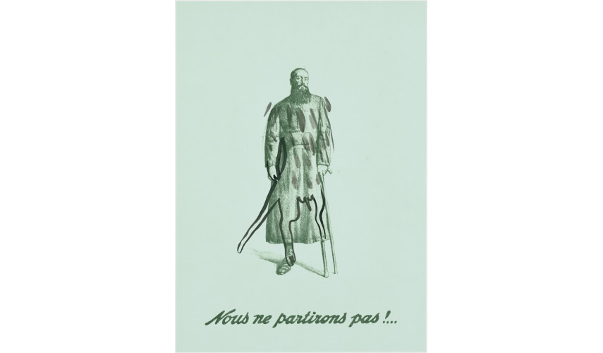

This poster depicts a man with a wooden leg and a clenched fist. It is a poster of a religious war veteran, but a poster whose referents have been erased. The drawing transforms the veteran into a werewolf or the Egyptian god Anubis. This image can be understood as a reference to the permanence of myth, "the time when men and animals are not distinct yet," according to the definition given by Levi-Strauss (Levi-Strauss and Eribon, 1988). The poster's statement, "We will not leave", is no longer a declaration of war but a denial, seeking in vain to avert the fate of every man; one can compare it to this poem inscribed on a Gaelic grave: "Do not cry on my grave. I am not there, I did not die."
